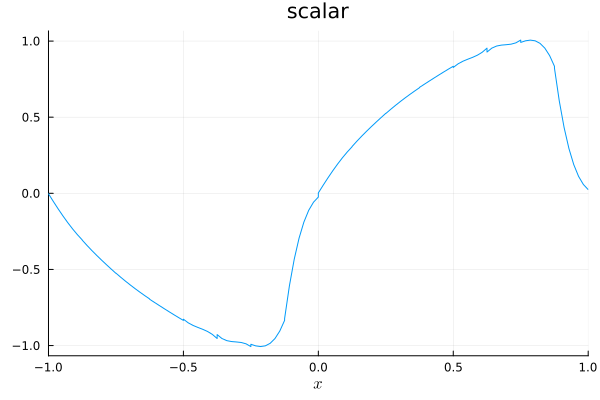
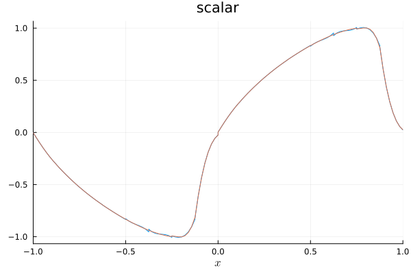
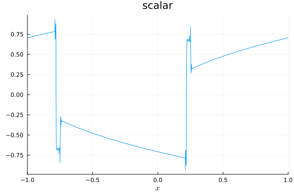
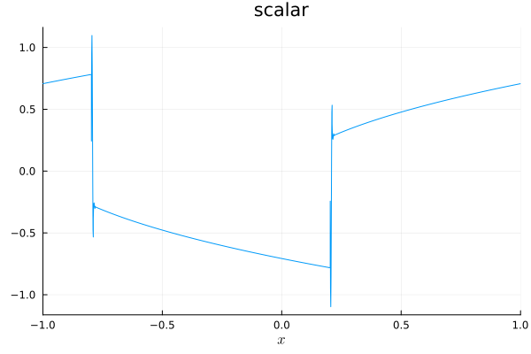

11: Adding a new scalar conservation law


If you want to use Trixi.jl for your own research, you might be interested in a new physics model that's not already included in Trixi.jl. In this tutorial, we will implement the cubic conservation law
\[\partial_t u(t,x) + \partial_x u(t,x)^3 = 0\]
in a periodic domain in one space dimension. In Trixi.jl, such a mathematical model is encoded as a subtype of Trixi.AbstractEquations.
Basic setup
using Trixistruct CubicEquation <: Trixi.AbstractEquations{1, # number of spatial dimensions 1} # number of primary variables, i.e. scalarendWe create CubicEquation as an empty struct since we do not use any parameters for this equation. Other models could bundle arbitrary parameters, e.g., the ideal gas constant for the compressible Euler equations.
Next, we define the physical flux f(u) = u^3 using the calling structure used in Trixi.jl.
Trixi.flux(u, orientation, equation::CubicEquation) = u .^ 3Trixi.varnames(_, ::CubicEquation) = ("scalar",)In Trixi.jl, the conserved variables u are usually passed as SVectors of variables at a single physical location. Hence, we must use u.^3 instead of the scalar operation u^3.
That's already enough to run a simple simulation with a standard DGSEM discretization using the non-dissipative central flux at interfaces.
using OrdinaryDiffEqSSPRK# Create a simulation setupequation = CubicEquation()initial_condition_sine(x, t, equation::CubicEquation) = SVector(sinpi(x[1]))mesh = TreeMesh(-1.0, 1.0, # min/max coordinates initial_refinement_level = 4, periodicity = true)solver = DGSEM(3, flux_central) # set polynomial degree to 3semi = SemidiscretizationHyperbolic(mesh, equation, initial_condition_sine, solver; boundary_conditions = boundary_condition_periodic)┌──────────────────────────────────────────────────────────────────────────────────────────────────┐
│ SemidiscretizationHyperbolic │
│ ════════════════════════════ │
│ #spatial dimensions: ……………………………………… 1 │
│ mesh: ……………………………………………………………………………… TreeMesh{1, Trixi.SerialTree{1, Float64}} with length 31 │
│ equations: ………………………………………………………………… CubicEquation │
│ initial condition: …………………………………………… initial_condition_sine │
│ boundary conditions: ……………………………………… Trixi.BoundaryConditionPeriodic │
│ source terms: ………………………………………………………… nothing │
│ solver: ………………………………………………………………………… DG │
│ total #DOFs per field: ………………………………… 64 │
└──────────────────────────────────────────────────────────────────────────────────────────────────┘We wrap the return value of the initial_condition_sine inside an SVector since that's the approach used in Trixi.jl also for systems of equations. We need to index the spatial coordinate x[1], since it is an SVector with one component. In multiple space dimensions, all spatial coordinates are passed together.
Next, we create an ODEProblem from the SciML/DifferentialEquations ecosystem. We can solve this ODE numerically using any time integration method, e.g., SSPRK43 from OrdinaryDiffEqSSPRK.jl. Before, we set up a callback to summarize the simulation setup.
# Create ODE problem with given time spantspan = (0.0, 0.09)ode = semidiscretize(semi, tspan)summary_callback = SummaryCallback()callbacks = CallbackSet(summary_callback)# OrdinaryDiffEq's `solve` method evolves the solution in time and executes the passed callbackssol = solve(ode, SSPRK43(); ode_default_options()..., callback = callbacks);
████████╗██████╗ ██╗██╗ ██╗██╗
╚══██╔══╝██╔══██╗██║╚██╗██╔╝██║
██║ ██████╔╝██║ ╚███╔╝ ██║
██║ ██╔══██╗██║ ██╔██╗ ██║
██║ ██║ ██║██║██╔╝ ██╗██║
╚═╝ ╚═╝ ╚═╝╚═╝╚═╝ ╚═╝╚═╝
┌──────────────────────────────────────────────────────────────────────────────────────────────────┐
│ SemidiscretizationHyperbolic │
│ ════════════════════════════ │
│ #spatial dimensions: ……………………………………… 1 │
│ mesh: ……………………………………………………………………………… TreeMesh{1, Trixi.SerialTree{1, Float64}} with length 31 │
│ equations: ………………………………………………………………… CubicEquation │
│ initial condition: …………………………………………… initial_condition_sine │
│ boundary conditions: ……………………………………… Trixi.BoundaryConditionPeriodic │
│ source terms: ………………………………………………………… nothing │
│ solver: ………………………………………………………………………… DG │
│ total #DOFs per field: ………………………………… 64 │
└──────────────────────────────────────────────────────────────────────────────────────────────────┘
┌──────────────────────────────────────────────────────────────────────────────────────────────────┐
│ TreeMesh{1, Trixi.SerialTree{1, Float64}} │
│ ═════════════════════════════════════════ │
│ center: ………………………………………………………………………… [0.0] │
│ length: ………………………………………………………………………… 2.0 │
│ periodicity: …………………………………………………………… (true,) │
│ current #cells: …………………………………………………… 31 │
│ #leaf-cells: …………………………………………………………… 16 │
│ current capacity: ……………………………………………… 31 │
└──────────────────────────────────────────────────────────────────────────────────────────────────┘
┌──────────────────────────────────────────────────────────────────────────────────────────────────┐
│ CubicEquation │
│ ═════════════ │
│ #variables: ……………………………………………………………… 1 │
│ │ variable 1: ………………………………………………………… scalar │
└──────────────────────────────────────────────────────────────────────────────────────────────────┘
┌──────────────────────────────────────────────────────────────────────────────────────────────────┐
│ DG{Float64} │
│ ═══════════ │
│ basis: …………………………………………………………………………… LobattoLegendreBasis{Float64}(polydeg=3) │
│ mortar: ………………………………………………………………………… LobattoLegendreMortarL2{Float64}(polydeg=3) │
│ surface integral: ……………………………………………… SurfaceIntegralWeakForm │
│ │ surface flux: …………………………………………………… flux_central │
│ volume integral: ………………………………………………… VolumeIntegralWeakForm │
└──────────────────────────────────────────────────────────────────────────────────────────────────┘
┌──────────────────────────────────────────────────────────────────────────────────────────────────┐
│ Time integration │
│ ════════════════ │
│ Start time: ……………………………………………………………… 0.0 │
│ Final time: ……………………………………………………………… 0.09 │
│ time integrator: ………………………………………………… SSPRK43 │
│ adaptive: …………………………………………………………………… true │
│ abstol: ………………………………………………………………………… 1.0e-6 │
│ reltol: ………………………………………………………………………… 0.001 │
│ controller: ……………………………………………………………… OrdinaryDiffEqCore.PIControll… 0.13333333333333333, 0.0001) │
└──────────────────────────────────────────────────────────────────────────────────────────────────┘
┌──────────────────────────────────────────────────────────────────────────────────────────────────┐
│ Environment information │
│ ═══════════════════════ │
│ #threads: …………………………………………………………………… 1 │
│ threading backend: …………………………………………… polyester │
└──────────────────────────────────────────────────────────────────────────────────────────────────┘
Trixi.jl
───────────────────────────────────────────────────────────────────────────────────
Time Allocations
────────────────────── ────────────────────────
Tot / % measured: 119μs / 70.2% 6.37KiB / 38.5%
───────────────────────────── ────────────────────── ────────────────────────
Section ncalls time %tot avg alloc %tot avg
───────────────────────────────────────────────────────────────────────────────────
rhs_hyperbolic! 58 83.7μs 100.0% 1.44μs 2.45KiB 100.0% 43.3B
├─ ~rhs_hyperbolic!~ 58 44.9μs 53.7% 775ns 2.45KiB 100.0% 43.3B
├─ volume integral 58 14.6μs 17.5% 253ns ∅ ∅ ∅
├─ interface flux 58 6.41μs 7.7% 110ns ∅ ∅ ∅
├─ prolong2interfaces 58 3.93μs 4.7% 67.8ns ∅ ∅ ∅
├─ surface integral 58 3.37μs 4.0% 58.1ns ∅ ∅ ∅
├─ Jacobian 58 2.70μs 3.2% 46.6ns ∅ ∅ ∅
├─ prolong2boundaries 58 2.29μs 2.7% 39.5ns ∅ ∅ ∅
├─ reset ∂u/∂t 58 2.02μs 2.4% 34.9ns ∅ ∅ ∅
├─ boundary flux 58 1.71μs 2.0% 29.5ns ∅ ∅ ∅
└─ source terms 58 1.65μs 2.0% 28.4ns ∅ ∅ ∅
───────────────────────────────────────────────────────────────────────────────────That's it, you ran your first simulation using your new equation with Trixi.jl! Now, we can plot the solution at the final time using Plots.jl.
using Plotsplot(sol)
You can already see that discontinuities will develop and oscillations start to occur around steep parts of the wave. That's expected from our central discretization. To avoid these issues, we need to use dissipative numerical fluxes (approximate Riemann solvers) at interfaces.
Advanced setup
Thus, we add a Godunov's flux for our cubic equation. That is easy for this equation since the wave speed f'(u) = 3u^2 is always non-negative.
@inline Trixi.flux_godunov(u_ll, u_rr, orientation, equation::CubicEquation) = flux(u_ll, orientation, equation)Let's run the example again but with a dissipative numerical flux at interfaces. remake will recreate the semidiscretization we used before and only change selected parameters, in this case the solver.
# A new setup with dissipationsemi = remake(semi, solver = DGSEM(3, flux_godunov))ode = semidiscretize(semi, tspan)sol = solve(ode, SSPRK43(); ode_default_options()...)plot!(sol)
You can see that there are fewer oscillations, in particular around steep edges. Now let's increase the final time (and also the spatial resolution).
# A larger final time: Nonclassical shocks develop (you can even increase the refinement to 12)semi = remake(semi, mesh = TreeMesh(-1.0, 1.0, initial_refinement_level = 8, periodicity = true))ode = semidiscretize(semi, (0.0, 0.5)) # set tspan to (0.0, 0.5)sol = solve(ode, SSPRK43(); ode_default_options()...)plot(sol)
You can observe that nonclassical shocks develop and are stable under grid refinement, e.g. for initial_refinement_level=12. In this case, these nonclassical shocks can be avoided by using an entropy-dissipative semidiscretization. Thus, we need to define an entropy-conservative numerical flux
@inline function Trixi.flux_ec(u_ll, u_rr, orientation, equation::CubicEquation) return SVector(0.25 * (u_ll[1]^3 + u_ll[1]^2 * u_rr[1] + u_ll[1] * u_rr[1]^2 + u_rr[1]^3))endand use a VolumeIntegralFluxDifferencing instead of the standard VolumeIntegralWeakForm in the DGSEM.
# Let's use a provably entropy-dissipative semidiscretizationsemi = remake(semi, solver = DGSEM(3, flux_godunov, VolumeIntegralFluxDifferencing(flux_ec)))ode = semidiscretize(semi, (0.0, 0.5))sol = solve(ode, SSPRK43(); ode_default_options()...);plot(sol)
Possible next steps could be
- to define
Trixi.max_abs_speeds(u, equations::CubicEquation) = 3 * u[1]^2to use CFL-based time step control via aStepsizeCallback - to define quantities of interest like
Trixi.entropy(u, equations::CubicEquation) = u[1]^2and integrate them in a simulation using theAnalysisCallback - to experiment with shock-capturing volume integrals
VolumeIntegralShockCapturingHGand adaptive mesh refinementAMRCallback
For further reading, Trixi.jl provides another example on adding a scalar equation. In the elixir about the KPP problem, the 2D scalar "KPP equation" from Kurganov, Petrova, Popov (2007) is implemented.
Summary of the code
To sum up, here is the complete code that we used (without the callbacks since these create a lot of unnecessary output in the doctests of this tutorial). In addition, we create the struct inside the new module CubicConservationLaw. That ensures that we can re-create structs defined therein without having to restart Julia.
# Define new physicsmodule CubicConservationLawusing Trixistruct CubicEquation <: Trixi.AbstractEquations{1, # number of spatial dimensions 1} # number of primary variables, i.e. scalarend@inline Trixi.flux(u, orientation, equation::CubicEquation) = u .^ 3Trixi.varnames(_, ::CubicEquation) = ("scalar",)@inline Trixi.flux_godunov(u_ll, u_rr, orientation, equation::CubicEquation) = flux(u_ll, orientation, equation)@inline function Trixi.flux_ec(u_ll, u_rr, orientation, equation::CubicEquation) return SVector(0.25 * (u_ll[1]^3 + u_ll[1]^2 * u_rr[1] + u_ll[1] * u_rr[1]^2 + u_rr[1]^3))endend # module# Create a simulation setupimport .CubicConservationLawusing Trixiusing OrdinaryDiffEqSSPRKusing Plotsequation = CubicConservationLaw.CubicEquation()function initial_condition_sine(x, t, equation::CubicConservationLaw.CubicEquation) return SVector(sinpi(x[1]))endmesh = TreeMesh(-1.0, 1.0, # min/max coordinates initial_refinement_level = 4, periodicity = true)solver = DGSEM(3, flux_central) # set polynomial degree to 3semi = SemidiscretizationHyperbolic(mesh, equation, initial_condition_sine, solver; boundary_conditions = boundary_condition_periodic)# Create ODE problem with given time spantspan = (0.0, 0.1)ode = semidiscretize(semi, tspan)# OrdinaryDiffEq's `solve` method evolves the solution in time and executes the passed callbackssol = solve(ode, SSPRK43(); ode_default_options()...)plot(sol)# A new setup with dissipationsemi = remake(semi, solver = DGSEM(3, flux_godunov))ode = semidiscretize(semi, tspan)sol = solve(ode, SSPRK43(); ode_default_options()...)plot!(sol)# A larger final time: Nonclassical shocks develop (you can even increase the refinement to 12)semi = remake(semi, mesh = TreeMesh(-1.0, 1.0, initial_refinement_level = 8, periodicity = true))ode = semidiscretize(semi, (0.0, 0.5))sol = solve(ode, SSPRK43(); ode_default_options()...)plot(sol)# Let's use a provably entropy-dissipative semidiscretizationsemi = remake(semi, solver = DGSEM(3, flux_godunov, VolumeIntegralFluxDifferencing(flux_ec)))ode = semidiscretize(semi, (0.0, 0.5))sol = solve(ode, SSPRK43(); ode_default_options()...)plot(sol)Package versions
These results were obtained using the following versions.
using InteractiveUtilsversioninfo()using PkgPkg.status(["Trixi", "OrdinaryDiffEqSSPRK", "Plots"], mode = PKGMODE_MANIFEST)Julia Version 1.10.12
Commit d93beab124c (2026-08-15 10:29 UTC)
Build Info:
Official https://julialang.org/ release
Platform Info:
OS: Linux (x86_64-linux-gnu)
CPU: 4 × AMD EPYC 7763 64-Core Processor
WORD_SIZE: 64
LIBM: libopenlibm
LLVM: libLLVM-15.0.7 (ORCJIT, znver3)
Threads: 1 default, 0 interactive, 1 GC (on 4 virtual cores)
Environment:
JULIA_PKG_SERVER_REGISTRY_PREFERENCE = eager
Status `~/work/Trixi.jl/Trixi.jl/docs/Manifest.toml`
[669c94d9] OrdinaryDiffEqSSPRK v2.3.2
[91a5bcdd] Plots v1.41.7
[a7f1ee26] Trixi v0.17.6-DEV `~/work/Trixi.jl/Trixi.jl`This page was generated using Literate.jl.